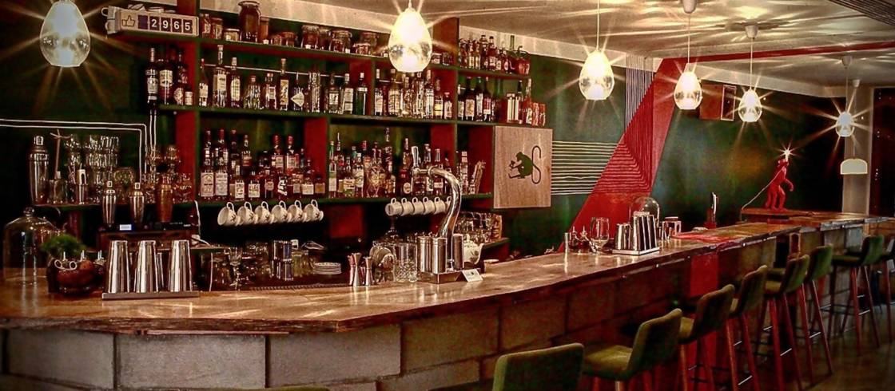
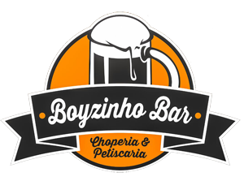

Boyzinho Bar
Rua Quáta, 364 - Vila Olimpia, São Paulo - SP

Horário de funcionamento: 12:00 as 01:00 (terça a domingo)
Musica ambiente
Preço: $$$
Avaliação: ★★★★
Fundado em 2012 por dois ex-alunos da faculdade Insper, o Boyzinho Bar é tido
como o bar tradicional da faculdade. Oferecendo chop e cervejas artesanais
do momento e uma comida sofisticada, como frutos do mar fritos e uma deliciosa
porção de carpaccio, bar atrai os jovens universitários que gostam de frequentar
bares, porém preferem um ambiente de mais luxo.